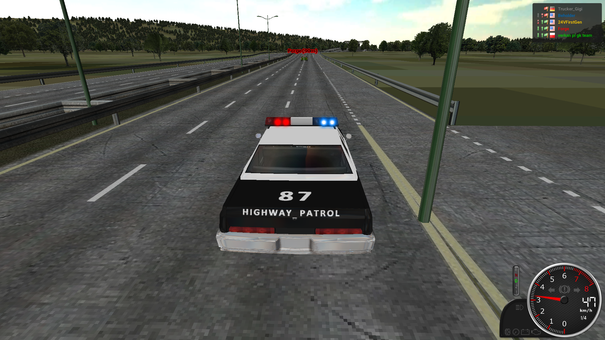
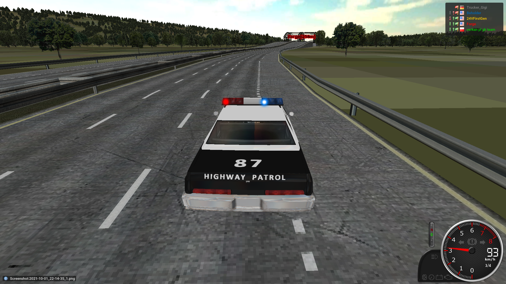
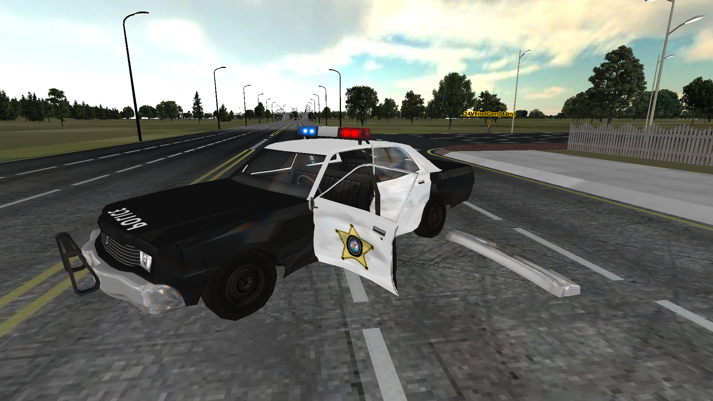

Recent Violations
Quick summary of this system: Police officers can report other Players using the form. The form will be handled by Moderators and the result will be posted here, but only if they approved the report. Moderators have to state every penalty here. Proof images or videos have to be included if there are any. Moderators have to update the table on the main page of this system, too.
Reports:
Players are allowed to appeal against the cases below. Please head to our Discord server or contact Trucker_Gigi via the Forum. Please note that you can only do so within the month you've been fined.
Case 1
| Suspect | Officer | Infractions | Points |
|---|---|---|---|
| verkan pl gk team | Trucker_Gigi | §27 | 2 |
Protocol:
The suspect ignored the speed limit of the highway. The speed limit was mentioned after every exit and the suspect clearly ignored those. The proof images have been taken with a time-gap of about three seconds.
I am requesting two points for this speeding violation. No one was harmed.
- Trucker_Gigi 01/10/2021
Proof


Case 2
| Suspect | Officer | Infractions | Points |
|---|---|---|---|
| Forge | Trucker_Gigi | §27, §22, §2 | 5 |
Protocol:
I noticed that the suspect was doing donuts with his super-modified vehicle, this resulted in a car chase. I failed to catch up with the suspect right after he started to notice me as well. I took two images, just a few seconds apart from each other, and continued the chase. I managed to block the suspects path for a moment. After telling him to stop, he reversed his car out of my wrecked vehicle and drove off. I am requesting one point for damaging the police cruiser, two for speeding on the highway (which has a speed limit) and another two for not stopping his vehicle when I told him to do so.
- Trucker_Gigi 01/10/2021
Proof


Case 3
| Suspect | Officer | Infractions | Points |
|---|---|---|---|
| Forge | Trucker_Gigi | §4 | 1 |
Protocol:
The suspect blocked the highway in one direction. He moved his truck and continued to load his trailer after my warning.
- Trucker_Gigi 01/10/2021
Proof